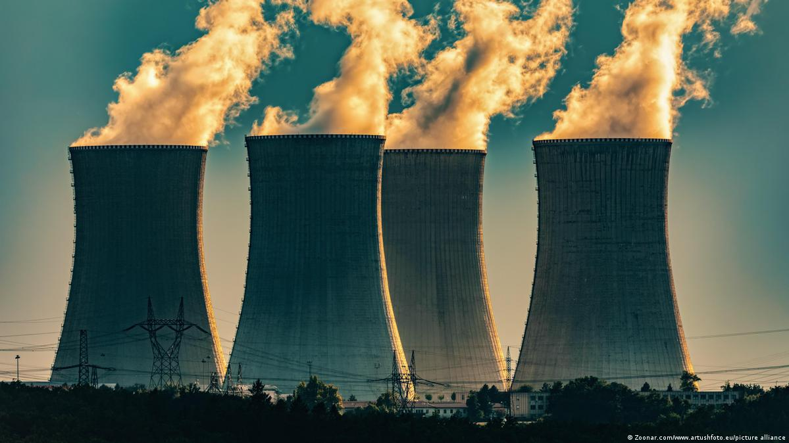
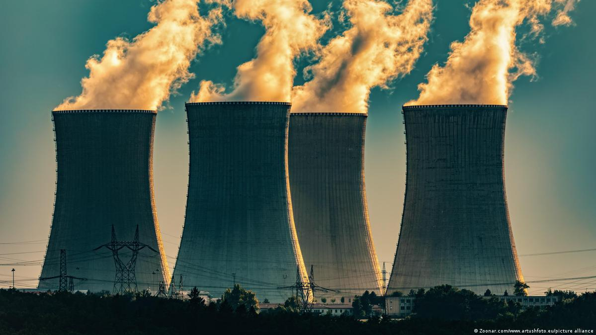

Energy Sources
Energy sources are natural resources that can be converted into usable energy for a wide range of purposes, each
with its own set of advantages and disadvantages. Fossil fuels are non-renewable energy sources such as coal, oil,
and natural gas, but their production and use have negative environmental impacts such as air pollution and
greenhouse gas emissions. Nuclear energy is generated from the splitting of atoms in a process called nuclear
fission, while renewable energy sources are those that are replenished naturally and do not deplete over time.
Alternative energy sources, such as hydrogen, tidal, and wave energy, are not commonly used but have the potential
to become a significant source of energy in the future. It is essential to consider the advantages and
consequences of each energy source before selecting and using them to meet our energy needs.

 

Learning about energy and its sources is essential to understanding the natural world and how energy can be used
to improve our lives. Energy is a critical resource for economic growth and development, and its availability and
affordability are key elements of national security. Moreover, power generation is the largest contributor to
greenhouse gas emissions that drive climate change. Therefore, studying energy can help identify new sources of
energy and develop ways to use them more efficiently, improving energy security and mitigating the impacts of
climate change. .
Overall, energy research is essential for sustainable development. Energy is central to sustainable development, and understanding energy helps us find ways to conserve natural resources and meet our energy needs while protecting the environment. By studying energy, we can find ways to reduce our carbon footprint and promote sustainable development, while at the same time improving our understanding of the natural world and improving energy security.
Overall, energy research is essential for sustainable development. Energy is central to sustainable development, and understanding energy helps us find ways to conserve natural resources and meet our energy needs while protecting the environment. By studying energy, we can find ways to reduce our carbon footprint and promote sustainable development, while at the same time improving our understanding of the natural world and improving energy security.